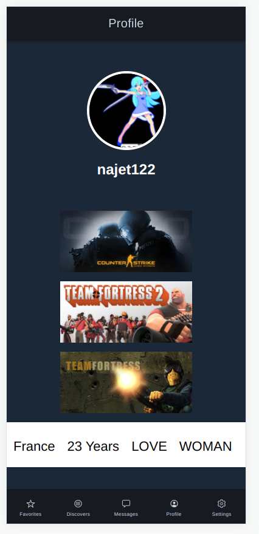
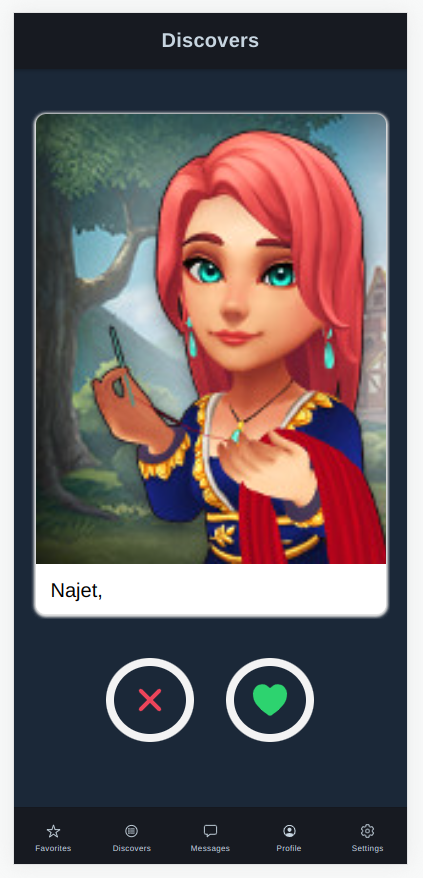
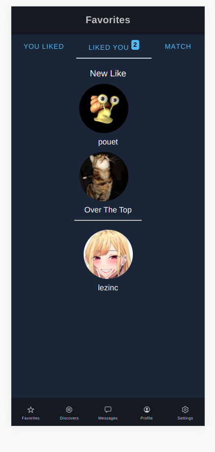

Le projet Steamer
Entreprise : Mithra production
Les technologies : Ionic pour le frontend, NestJS pour le backend et MariaDB comme base de données.



Dans le cadre du projet Steamer, j'ai développé l'affichage de l'avatar et du pseudo Steamer, ainsi que la page de profil avec des badges pour les nouveaux likes et matchs. J'ai également créé les tables "swipe" et "match" pour enregistrer les interactions entre utilisateurs, incluant la suppression automatique des dislikes après 30 jours.